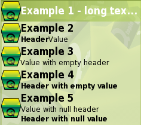
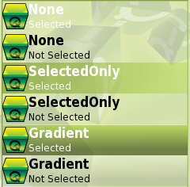
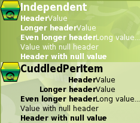

|
Home · All Namespaces · All Classes · Grouped Classes · Modules · Functions | |
The QPimDelegate class provides an abstract delegate for rendering multiple lines of text for a PIM record. More...
#include <QPimDelegate>
This class is under development and is subject to change.
Inherits QAbstractItemDelegate.
Inherited by QContactDelegate and QTaskDelegate.
The QPimDelegate class provides an abstract delegate for rendering multiple lines of text for a PIM record.
QPimDelegate draws an item with the following features.
All text lines will be elided if they are too wide.
Much like QAbstractItemDelegate, this class is not intended to be used directly. Subclasses are expected to override some or all of the customization functions providing the above pieces of information or style settings.

See also QAbstractItemDelegate, QContactDelegate, QPimRecord, and Pim Library.
Enumerates the ways that the background of an item can be rendered by the drawBackground() function.
| Constant | Value | Description |
|---|---|---|
| QPimDelegate::None | 0 | No background will be drawn by this delegate. The container view may still have applied a background. |
| QPimDelegate::SelectedOnly | 1 | Only the selected item will have its background drawn by the delegate. This uses the selected palette brush. |
| QPimDelegate::Gradient | 2 | The delegate draws a linear gradient from top to bottom in slightly different shades of either the style's highlight brush color (if the item is selected) or the base brush color. |

See also backgroundStyle().
Enumerates the ways that the header and value pairs of the subsidiary lines can be rendered.
| Constant | Value | Description |
|---|---|---|
| QPimDelegate::Independent | 0 | Each header and value pair is rendered independently, leading aligned, with the value string being rendered immediately after the header. |
| QPimDelegate::CuddledPerItem | 1 | All of the subsidiary lines of an item will be rendered with the same width for the header strings, and the header strings will be rendered trailing aligned within this space. The value strings will be rendered leading aligned, so that the header and value strings for a subsidiary line will be cuddled together. |

See also subTextAlignment().
Constructs a QPimDelegate, with the given parent.
Destroys a QPimDelegate.
Returns a value that indicates how the background of this item should be rendered.
The default implementation returns QPimDelegate::SelectedOnly, and ignores the supplied index and option parameters.
See also drawBackground().
Returns the size hint for the whole delegate, which will include the space required for decorations, if any. The returned value is calculated by adding any space required for decorations to the given textSizeHint parameter.
The default implementation returns the supplied textSizeHint, and ignores the supplied index and option parameters.
Attempts to return a font that is similar to start but has the given size difference of step. If no matching font for the given step value is found, it will try increasingly larger/smaller fonts (depending on whether step was originally positive or negative). If no suitable font is found after trying different sizes, the original font start will be returned.
Paints the background of the item.
The rectangle to paint in (using p) should be obtained from option (option.rect) and the index of the item to paint.
The default implementation fetches the background style to paint by calling backgroundStyle() for the given option and index.
Paints any decorations, and assigns to the given lists of rectangles, which the caller can then use to align painted text, if required. The rtl argument is a convenience parameter that is true if the decorations should be painted right-to-left, or false if they should be painted left-to-right. This may affect which side of the rectangle a decoration is painted on.
The rectangle to paint in (using p) should be obtained from option (option.rect) and the index of the item to paint.
This function should return (in the leadingFloats and trailingFloats parameters) lists of rectangles that the rendered text will be wrapped around. Rectangles on the leading side of the text should be returned in leadingFloats, and rectangles on the trailing side should be returned in trailingFloats. This allows some flexibility in deciding whether decorations should be drawn behind or beside the text.
The default implementation does not draw anything, and returns two empty lists.
See also textRectangle().
Paints the foreground of the item.
The rectangle to paint in (using p) should be obtained from option (option.rect) and the index of the item to paint.
This function is called after painting all other visual elements (background, decorations, text etc) and could be used to apply a transparent effect to the rendered items.
The default implementation does not paint anything.
Returns the font to use for painting the main label text of the item for the given index and style option option.
The default behavior is to return the font of the style option option, modified for bold rendering, and to ignore index.
Returns the string to be displayed as the main text element of the delegate. The default implementation returns the DisplayRole of the supplied index, and ignores option.
Paints the item specified by index, using the supplied painter and style option option.
The default implementation will first draw the background and decorations, then the text items, and finally, any foreground items. All the drawing is accomplished using basic methods in this class.
Reimplemented from QAbstractItemDelegate.
See also drawBackground(), drawDecorations(), mainFont(), secondaryFont(), secondaryHeaderFont(), subTextAlignment(), textRectangle(), and drawForeground().
Returns the font to use for painting the subsidiary value texts of the item, for the given index and style option option.
The default return value is a font that is at least two point sizes smaller than the font of the style option option. The supplied index is ignored in this case.
See also mainFont() and secondaryHeaderFont().
Returns the font to use for painting the subsidiary header texts of the item, for the given index and style option option.
The default return value is a bold font that is at least two point sizes smaller than the font of the style option option. The supplied index is ignored in this case.
See also mainFont() and secondaryFont().
Returns the delegate's size hint for a specific index index and item style option.
Reimplemented from QAbstractItemDelegate.
See also decorationsSizeHint().
Returns the alignment of the header and value pairs of the subsidiary lines of text.
The default implementation returns QPimDelegate::Independent, and ignores the supplied index and option parameters.
Returns the list of subsidiary lines to render. This is stored in a list of pairs of strings, where the first member of the pair is the "header" string, and the second member of the pair is the "value" string.
If either member of the pair is a null QString (QString()), then the subsidiary line is considered to consist of a single string that will take up the entire line. You can specify an empty QString (QString("")) if you wish to have blank space.
The default implementation returns an empty list, and ignores the supplied index and option parameters.
Returns a hint for the number of subsidiary lines of text to render for an item, which is used to calculate the sizeHint of this delegate.
The default implementation obtains the actual list of subsidiary lines of text to render with the supplied option and index, and returns the size of this list.
This method should be overridden if it can be slow to retrieve the list of subsidiary lines but fast to estimate the number of lines, for example, if all items are rendered with two subsidiary lines of text, but each subsidiary line of text requires a database lookup.
See also subTexts().
Returns the rectangle that a line of text should be rendered in, given the following parameters.
Note that the drawDecorations() function returns lists of rectangles that are RTL independent (e.g. leading and trailing instead of left and right). The lists of rectangles passed to this function are in absolute terms (left and right) - for an LTR language, they are equivalent, but for an RTL language the two lists will be exchanged.
This function is used while rendering each line of text, including any subsidiary lines.
See also drawDecorations().
| Copyright © 2009 Trolltech | Trademarks | Qt Extended 4.4.3 |